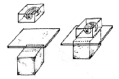

CHAPTER 8 - HISTOLOGICAL METHODS
Gelatin Embedding for Vibratome Sectioning of Embryos or Larvae
(Source: R. BreMiller)
1. Fix fish as desired.
2. Wash in fix buffer, 3 times for 5 min each wash.
3. Soak fish in 0.3 M sucrose for at least 30 min. Remove yolk sac from fish with forceps.
4. Transfer fish with as little sucrose solution as possible into 17% gelatin in 10% Hank's saline at 37C.
5. Swirl the fish to coat it well with gelatin and transfer it with a drop of gelatin onto a 5 mm square piece of glass made by scoring and breaking a clean microscope slide.
6. Orient the animal under a dissecting microscope with fine wire or forceps. The process may be facilitated by warming or cooling the glass plate.
7. Fasten the plate to a vibratome chuck with cyanoacrylic glue and clamp the chuck in the vibratome.
8. Surround the tissue with cold 0.3 M sucrose. Use frozen cubes of sucrose to maintain the temperature.
9. Sections can be cut 25-40 um thick with this technique. Pick them up with brush and transfer to cold, subbed slides.
10. Remove excess sucrose with a Kimwipe and allow the slides to dry. They should be processed within a few hours.

Gelatin embedding
The Zebrafish Book